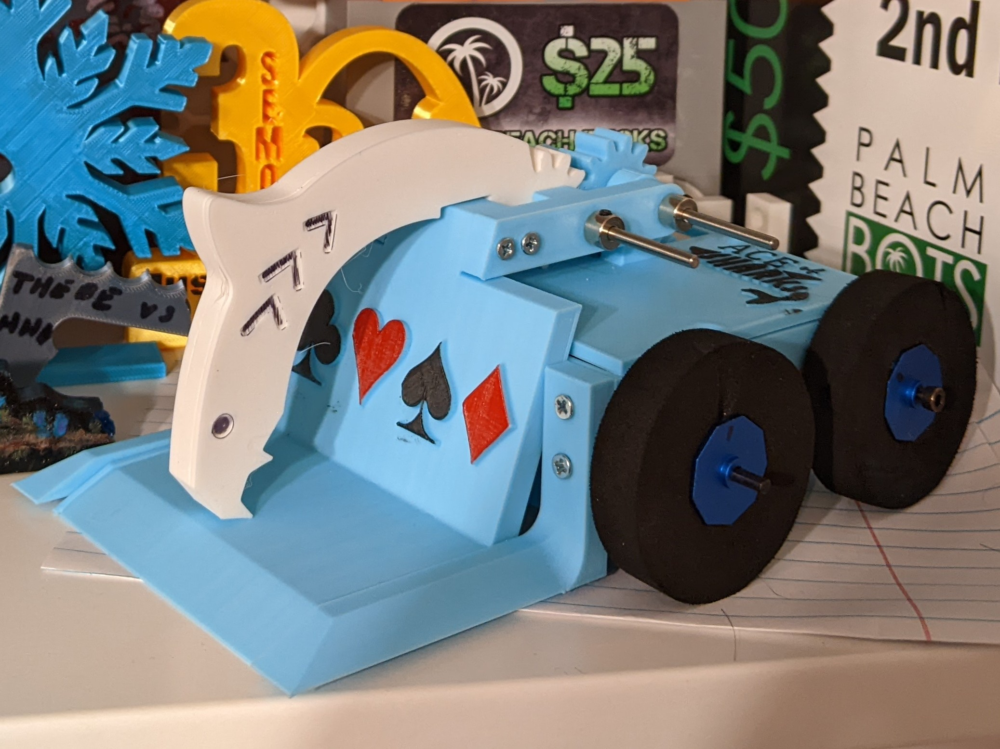
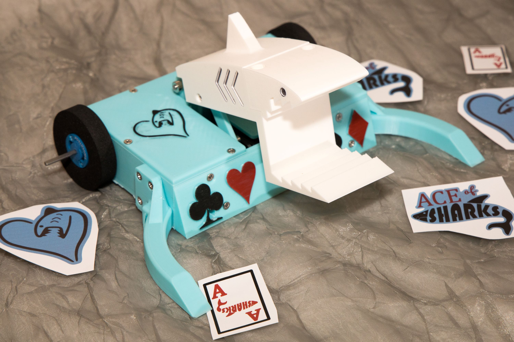

Ace of Sharks v3

Ace of Sharks v3 is a grappler combat robot that uses the same mechanism as the
BattleBot Claw Viper. The goal is to grab another combat robot and lift it into
the air and flip it over.
The current iteration of Ace of Sharks is fully open source on GitHub
here!
Ace of Sharks v1

Ace of Sharks v1-2 is a lifter combat robot with a specially designed lifter arm shape
to try to lift opponents into the air.
Ace of Sharks v1 got second place at it's first
tournament.